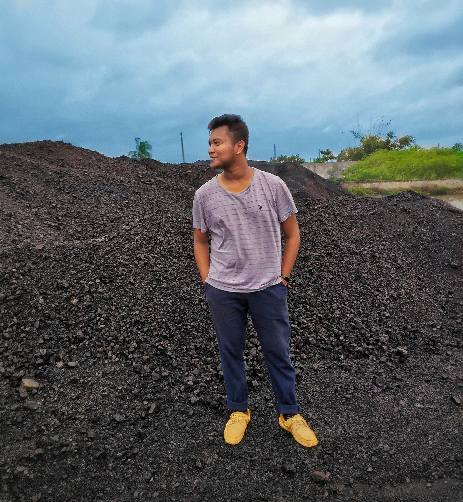

My Skills
I learned many things via online and offline courses. I know some good programming language like C, C++ ,JAVA,C#,PYTHON
also language like HTML,CSS,PHP
Query language like SQL.
Graphics Design feature like UI and UX design, Business card, Banner, Cover ,Brochure,flyer
I know the basic staff of Word,Excel,Powerpoint,Access

My Projects
So far i did many projects in my university and also for my practice. I created web application in c# name PAYROOL SYSTEM which is most successful of mine i also did a project CRIME AWARENESS SYSTEM in JAVA . I created a database for school management system Advance database course. I also design mobile application UI design for a riding app.I created software for Employee mangement system in software engineering course.
Achievements:
Graphics Design
In 2019 I am certified by one of best Graphics Institute SHIKHBE SHOBAI Where I took Third place in UI design and Banner Design
Content Writer
Inter University CSFEST-18 I Took participate in Content writing competition and i have got the second place for my article on "COULD ROBOT REPLACE HUMAN LABOUR FORCE" LIAMTALK
.jpg)